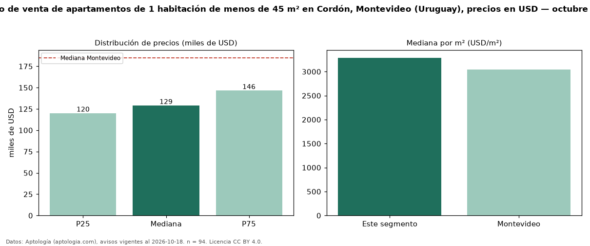

Precio de venta de apartamentos de 1 habitación de menos de 45 m² en Cordón, Montevideo (Uruguay), precios en USD — octubre 2026
Con 94 avisos vigentes, el precio mediano de apartamentos de 1 habitación de menos de 45 m² en venta en Cordón, Montevideo (Uruguay) es USD 128.950. Eso es 8 % menos que la mediana de los apartamentos de 1 habitación en venta de Cordón (USD 140.000, n = 309); este segmento reúne el 30 % de esos avisos. Por metro cuadrado, la mediana es USD 3.289/m² (n = 94), 21 % por encima de los apartamentos de 1 habitación en venta de Cordón (USD 2.725/m²). El área mediana anunciada es 39 m². La mediana de todos los apartamentos en venta de Montevideo es USD 185.000 (−30 % de diferencia). La mitad central de los avisos va de USD 120.000 a USD 146.478 (razón 1,2), una dispersión baja. Datos: Aptología (aptologia.com), CC BY 4.0 — https://www.aptologia.com/uy/venta/montevideo/cordon. Archivos: PDF, CSV con las cifras y gráfica PNG.

| Avisos únicos | 94 |
|---|---|
| Percentil 25 | COP 120.000 |
| Mediana | COP 128.950 |
| Percentil 75 | COP 146.477 |
| Mediana por m² | COP 3.289 |
Fuente: avisos vigentes de portales inmobiliarios recopilados por Aptología, deduplicados (mínimo 30 avisos únicos por celda). Precios pedidos, no cerrados. Fecha: 2026-10-18.